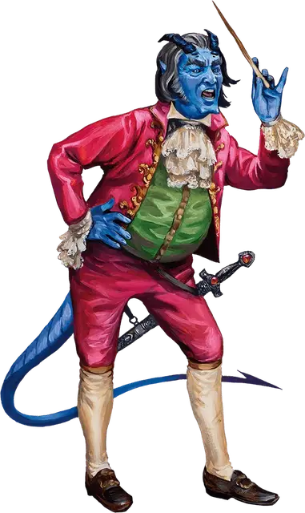

Ситиан Скальдеранг
Sythian Skalderang
Средний Гуманоид (Бард, Тифлинг), хаотично-злой, именной НИП

Класс Доспеха 15 (Дар Граз'зта)
Хиты 99 (18к8 + 18)
Скорость 30 футов
| мод | спас | ||
|---|---|---|---|
| СИЛ | 10 | +0 | +0 |
| ЛОВ | 15 | +2 | +5 |
| ТЕЛ | 13 | +1 | +1 |
| мод | спас | ||
|---|---|---|---|
| ИНТ | 14 | +2 | +2 |
| МДР | 11 | +0 | +3 |
| ХАР | 16 | +3 | +3 |
Навыки Выступление +6, Магия +5, Обман +6
Сопротивление урону огонь
Чувства тёмное зрение 60 футов, пассивное Восприятие 10
Языки Общий, Бездны
Опасность 7 (2900 опыта)
Бонус мастерства +3
Особенности
Боязнь лягушек и жаб. Ситиан становится испуганным, когда находится в пределах 20 футов от лягушки или жабы (любого размера), которую он может видеть.
Дар Граз'зта. Ситиан добавляет к своему КД модификатор Харизмы.
Действия
Мультиатака. Ситиан совершает две атаки Отравленным коротким мечом или Отравленным дротиком и использует Шёпот Аззаграта.
Отравленный короткий меч. . Рукопашная атака оружием: +5 к попаданию, досягаемость 5 футов, одна цель. Попадание: 5 (1к6 + 2) колющего урона плюс 5 (1к10) урона ядом.
Отравленный дротик. . Дальнобойная атака оружием: +5 к попаданию, дистанция 20/60 футов, одна цель. Попадание: 4 (1к4 +2) колющего урона плюс 5 (1к10) урона ядом.
Использование заклинаний. Ситиан может накладывать следующие заклинания, без использования материальных компонентов, используя Харизму в качестве базовой характеристики (Сл спасброска от заклинания 14):
• Неограниченно: волшебная рука [mage hand], фокусы [prestidigitation];
• 1/день каждое: очарование личности [charm person], огонь фей [faerie fire], невидимый слуга [unseen servant].
Шёпот Аззаграта. Каждое существо в 15-футовом кубе, исходящим от Ситиана, должно совершить спасбросок Мудрости Сл 14. В случае провала существо получает 18 (4к8) урона психической энергией и становится недееспособным до конца своего следующего хода. В случае успеха существо получает половину этого урона и остаётся дееспособно.
Реакции
Адское возмездие (заклинание 3/день). Когда Ситиан получает урон от существа в пределах 60 футов, которого он может видеть, это существо охватывается адским пламенем и должно совершить спасбросок Телосложения Сл 14, получая 14 (4к6) урона огнём при провале или половину этого урона при успехе.
Описание
Ситиан Скалдеранг был благословлен повелителем демонов Граз'зтом. Дар Граз'зта Ситиану проявляется несколькими способами, включая способность Ситиана вызывать демонический шёпот, который может воздействовать на сознание врагов.
Когда Ситиан был маленьким мальчиком, он отправился со своим отцом на охоту. Гигантская жаба [giant toad] напала на них и проглотила Ситиана. Хотя Ситиан сбежал после того, как его отец убил монстра, нападение создало у Ситиана острый страх перед лягушками и жабами.
Родители Ситиана надеялись, что его интерес к музыке приведет к тому, что Ситиан станет выдающимся музыкантом; но он стал заурядным, несмотря на помощь нескольких именитых преподавателей. Спустя годы Ситиан начинает негодует из за их стремлений, поскольку деньги, которые его родители потратили на его образование, оставили на нём множество неоплаченных долгов. Теперь, когда его родители умерли, он полон решимости сохранить свое поместье и сделает все возможное, чтобы сохранить то, что у него осталось.
Ситиан настроился на Золотой топор, чтобы изучать и использовать свойства Мандолины Канаит. Хотя он надеется, что Золотой топор принесет ему благосклонность и финансовую поддержку the ван Тиммелса, Ситиан скорее лишится инструмента, чем увидит, что какой-либо вред грозит его ученикам, поскольку его репутация и финансовый успех зависят от их благополучия. Он с радостью отдаёт инструмент, чтобы спастись самому.
Ситиан - нетерпеливый и требовательный учитель, который придерживается строгого метода работы со своими учениками. Его костяная дирижерская палочка служит одновременно ему заклинательной фокусировкой.